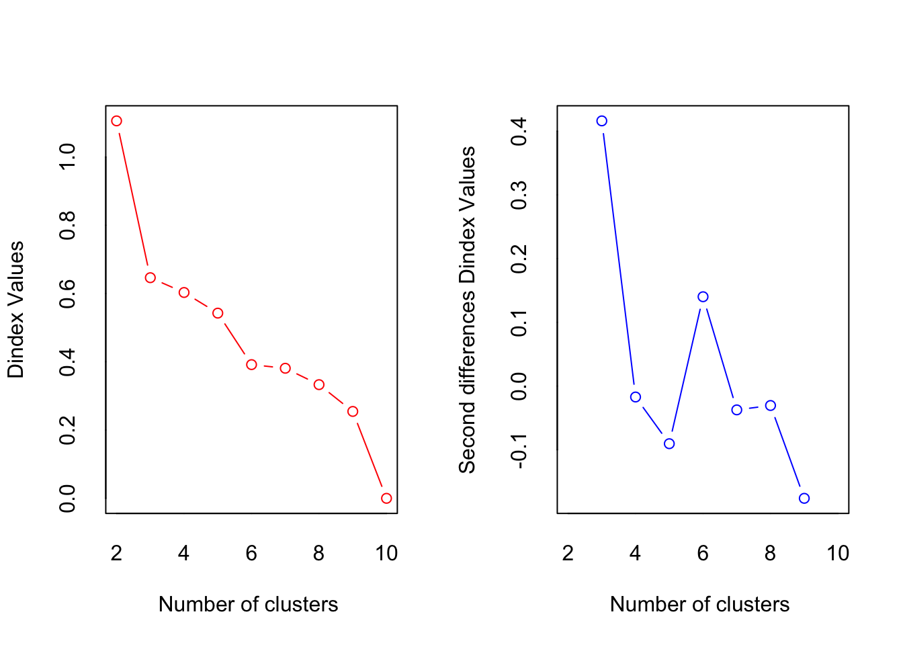

This second screening phase is the most important phase to eliminate articles which fall outside the focus of the study. The objective of full text screening is to determine if the articles meet the inclusion and exclusion criteria by scanning the full text. Therefore, I propose that the screening process is combined with quality appraisal.
Quality appraisal is the process of assessing the quality of a publication. Some rubrics for quality appraisal have been developed in previous studies. Some rubrics target the quality of research reported in the publication, and the others focus on the quality of reporting. In our recent research, we attempted to combine these two spectrum to create our own quality appraisal rubric (see Nguyen et al., 2026). The rubric is provided in the following.
No
Items
Target
Yes (1), No (0)
1
Are the research questions/objectives clearly and appropriately defined?
The quality of reporting
2
Is the research design clearly presented in the article?
The quality of reporting
3
Is the research design strong enough for the research questions/objectives?
The quality of research
4
Is the sampling strategy appropriately justified?
The quality of reporting
5
Is the number of cases/sample size adequate?
The quality of reseach
6
Does the article clearly describe the setting of data collection?
The quality of reporting
7
Is/Are the method(s) of data collection clearly presented in the article?
The quality of reporting
8
Is the theoretical framework clearly defined in the article?
The quality of reporting
9
Is the theoretical framework appropriate for the research questions/objectives?
The quality of research
10
Is/Are the method(s) of data analysis appropriate for addressing the research questions/objectives?
The quality of research
11
Is/Are the method(s) of data analysis clearly presented?
The quality of reporting
12
Is/Are the research question(s) or objective(s) answered?
The quality of reporting
13
Are the discussion/conclusion(s)/ implication(s) data appropriate?
The quality of reporting
14
Is there evidence of attention to ethical issues?
The quality of research
The advantage of doing quality appraisal in the full-text screening is that like killing two birds with one stone. Completing the rubric requires scanning many parts of the articles, so any articles which do not fall into the criteria will be spotted. Therefore, no additional effort is necessary to exclude the articles after completing the quality appraisal rubric.
Reliability of full text screening and quality appraisal
When the full text screening is conducted by more than one team members, which is recommended, the team members should practice screening one or two papers together then complete at least 10 papers individually. To ensure all team members understand the inclusion/exclusion criteria and rubric, an inter-rater reliability needs to be calculated from these 10 articles. For this purpose, the excluded article can be scored 0. If the inter-rater reliability obtained is still undesirable, the team needs to discuss and repeat the cycle (screening practice –> screening at least 10 papers –> calculate inter-rater reliabilit) until a desirable inter-rater reliability level is reached.
For this purpose, Intraclass Correlation Coefficient (ICC) is a common method to calculate the inter-rater reliability for numerical data. In addition, ICC can be used with two or more raters. The formula used to calculate this type of inter-rater reliability is:
Where: \(\text{ICC}_{(2,1)}\) = Two-way random effects model of ICC \(MS_b\) = the variance between subjects \(MS_e\) = the variance due to the interaction of judge by subject \(MS_j\) = the variances due to the judges \(_j\) = judges / raters
I have attempted to calculate this type of inter-rater reliability in Microsoft Excel using this formula, but it is too complex for a manual calculation. R has a specific package developed and maintained by Matthias Gamer and his colleagues to calculate ICC.
Calculating Intraclass Correlation Coefficient (ICC) in R
To show an example of how to calculate ICC using R, let’s generate a random scores for the quality appraisal.
set.seed(22) #this is to ensure that the data generated is the same as mineicc_data <-data.frame(Article_ID =paste0("Article_", 1:10),Rater_1 =sample(0:14, size =10, replace = T),Rater_2 =sample(0:14, size =10, replace = T),Rater_3 =sample(0:14, size =10, replace = T))icc_data
Based on the randomly generated data above, the ICC can be calculated using the following code. Install irr package if you have not done so. If you are not yet familiar with R, read ….
#install.packages("irr")irr::icc(icc_data[,2:4], model ="twoway",type ="agreement", unit ="single")
Single Score Intraclass Correlation
Model: twoway
Type : agreement
Subjects = 10
Raters = 3
ICC(A,1) = 0.237
F-Test, H0: r0 = 0 ; H1: r0 > 0
F(9,20) = 2.04 , p = 0.0883
95%-Confidence Interval for ICC Population Values:
-0.092 < ICC < 0.66
The results show that the ICC is 0.237, which is very low. The interpretation of ICC provided by Koo & Li (2016)
After the score based on the quality appraisal rubric is assigned for each paper on the list, these papers can be grouped into several quality category after removing papers assigned score 0. One of the ways to perform this categorization is using Clustering technique. In one of my project, I categorized the quality into (1) very high, (2) high, (3) medium, (4) low, (5) very low. Since the total numbers of articles was high, we only picked papers with very high and high quality to be included in our analysis. Let me now demonstrate how to conduct the clustering analysis in R.
Do demonstrate how each paper is assigned into corresponding cluster, we create randomly generate data consisting of 150 papers.
set.seed(22) #this is to ensure that the data generated is the same as minecluster_data <-data.frame(Article_ID =paste0("Article_", 1:150),"1"=sample(c(0,1), size =150, replace = T),"2"=sample(c(0,1), size =150, replace = T),"3"=sample(c(0,1), size =150, replace = T),"4"=sample(c(0,1), size =150, replace = T),"5"=sample(c(0,1), size =150, replace = T),"6"=sample(c(0,1), size =150, replace = T),"7"=sample(c(0,1), size =150, replace = T),"8"=sample(c(0,1), size =150, replace = T),"9"=sample(c(0,1), size =150, replace = T),"10"=sample(c(0,1), size =150, replace = T),"11"=sample(c(0,1), size =150, replace = T),"12"=sample(c(0,1), size =150, replace = T),"13"=sample(c(0,1), size =150, replace = T),"14"=sample(c(0,1), size =150, replace = T) )head(cluster_data)
First, we need to add a total column to the data above. Second, because the data included in the analysis should not include Article ID, we need to change the Article ID column into row name.
Now we should determine the optimal number of cluster. In this case, we will calculate the number of cluster based on 30 indices, and we can choose the suggested number of clusters which makes sense to our case.
*** : The Hubert index is a graphical method of determining the number of clusters.
In the plot of Hubert index, we seek a significant knee that corresponds to a
significant increase of the value of the measure i.e the significant peak in Hubert
index second differences plot.

*** : The D index is a graphical method of determining the number of clusters.
In the plot of D index, we seek a significant knee (the significant peak in Dindex
second differences plot) that corresponds to a significant increase of the value of
the measure.
*******************************************************************
* Among all indices:
* 1 proposed 2 as the best number of clusters
* 1 proposed 3 as the best number of clusters
* 1 proposed 6 as the best number of clusters
* 1 proposed 9 as the best number of clusters
* 2 proposed 10 as the best number of clusters
***** Conclusion *****
* According to the majority rule, the best number of clusters is 10
*******************************************************************
Please ignore most of the output shown above and focus on the last part of the output. Based on this part, we can choose 3 as the optimal number of cluster because we can categorize them into high quality, medium quality, and low quality.
Now we can start the cluster analysis the data using stats and factoextra package.
Now we can incorporate the number of clusters (k) into the data and inspect the number of articles assigned into each cluster.
grp <-as.data.frame(cutree(res.hc, k =3)) # Cut the dendrogram into 3 groupsgroup <- grp[,1] #Extract group IDtable(grp) # Check article per group
cutree(res.hc, k = 3)
1 2 3
99 31 20
If the number of articles for each cluster seems undesirable for you. You can try other methods of how distance between each cluster is measured. In the above example, I use complete for the method, you can try ward.D2 or others such as ward.D, single, average, mcquitty, median, centroid, kmeans. You can explore further to understand how each method measures the distance.
We can now write the cluster number (1, 2, or 3) into the data. To determine which cluster is high, medium, and low quality, we need calculate the mean of the total score for each cluster.
library(dplyr)
Attaching package: 'dplyr'
The following objects are masked from 'package:stats':
filter, lag
The following objects are masked from 'package:base':
intersect, setdiff, setequal, union
# A tibble: 3 × 4
cluster Min Max Mean
<int> <dbl> <dbl> <dbl>
1 1 6 8 6.87
2 2 9 11 9.61
3 3 2 5 4.15
References
Koo, T. K., & Li, M. Y. and. (2016). A guideline of selecting and reporting intraclass correlation coefficients for reliability research. Journal of Chiropractic Medicine, 15(2), 155–163. https://doi.org/10.1016/j.jcm.2016.02.012
Nguyen, H. T. M., Tatik, T., Mustafa, F., & Le, H. T. (2026). Conceptualisation of pre-service teacher culturally responsive approach: A systematic literature review. To Be Decided, 0, 0. https://doi.org/...